The fleet
Every machine that reports, with silence detection, duplicate detection and pre-registration. The desktop Team page shows the same rows the browser does — and a silent machine is a dash, never a stale reading.
Linux, macOS, Windows. C++20 with Qt 6. Version 0.13.0.
Pick any window and Crowsnest puts that app's CPU, memory, threads, file descriptors, disk and network throughput in a small panel that floats over your desktop. Click once and the same binary opens a full console for the whole machine: host, disks, GPU, sensors, containers, Kubernetes, databases, traces and what the cloud is billing you.
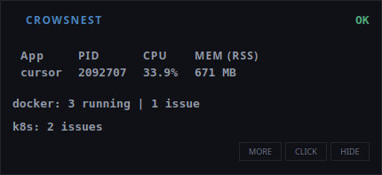
Every panel on this page is a live capture — the cloud panel's caveat is in the screenshot notes.
Free and paid, side by side
The desktop app ships whole under MIT — every view, no account, no telemetry, no licence check, never gated. The paid tier is the relay half: one place where your fleet's state outlives a closed laptop. Both prices are right here; nothing is hidden behind a click.
The complete desktop app, MIT licensed.
or $90 a year — $7.50 a month, two months free. One price per workspace.
| What you get | Free | Team |
|---|---|---|
| All 34 console views, Linux, macOS and Windows | Yes | Yes |
| Desktop alerts, incidents, silences, SLO burn, webhooks | Yes | Yes |
| Fleet view over your own LAN | Yes | Yes |
| Fleet state that survives a closed laptop | — | Yes |
| Browser dashboard with share links | — | Yes |
| Delivery: email, webhook, Slack, PagerDuty, Opsgenie, Discord, Teams | — | Yes |
| Routing tree, escalation steps, on-call rota | — | Yes |
| Members with roles, invites, audit trail | — | Yes |
| Price | $0 | $9/mo |
One price per workspace: $9 a month or $90 a year ($7.50 a month). Nothing in the Free column is ever reduced to sell the Team column — turning [remote] on is the entire upgrade.
Managed hosting is not open yet: today the relay is one static binary you run beside Postgres on your own server. The 14-day trial starts the day that relay begins serving your workspace, and the relay binary is MIT.
Every machine that reports, with silence detection, duplicate detection and pre-registration. The desktop Team page shows the same rows the browser does — and a silent machine is a dash, never a stale reading.
Threshold and composite rules over stored rollups, dependency and flap suppression, folding, and acknowledge, close and silence with an audit trail. The server is the truth both the browser and the desktop read.
Email, webhook (the Alertmanager v4 body with an HMAC), Slack, PagerDuty, Opsgenie, Discord and Teams, driven by a routing tree with escalation steps and an on-call rota. A retry ladder and a dead letter queue; every send is one ledger row.
Retention is stated and enforced by one function. Export is streamed as the desktop client's own CSV dialect or JSON. Delete is a real delete with a counts receipt.

| What | Limit |
|---|---|
| Machines per workspace | 100 |
| Seats (members) | 10 |
| Report cadence floor | 15 s |
| Share links | 25 live, 7–90 days |
| Data | Kept |
|---|---|
| Raw samples | 24 h |
| 60 s buckets | 30 d |
| 5 m buckets | 90 d |
| Events and audit | 1 y |
[remote] ships in the free build off by default, there is no licence check anywhere, and the report payload never carries process lists, command lines, environment, paths or logs — the schema refuses them and the field list documents every byte.[remote] is off until you switch it on.[remote] actions turns on the desktop verbs — acknowledge, close and a 30-minute silence from the Team page. Reading is on with the link alone, and a read-only token disables the verbs with the reason on the page.
What it shows
PID, CPU, RSS, threads, open files and context switches, added up over the app's whole process tree, not one PID. Disk read and write rates, TCP throughput and listening ports per process, sampled from the kernel once a second.
Host CPU and steal, memory, load, per-device disk throughput and utilisation, network interfaces, hwmon temperatures, fans and power, battery health, and GPU utilisation with the process holding it. Anything an OS cannot report is labelled as such, never left blank.
Docker containers with live CPU, memory, network and PIDs through the Engine API. Kubernetes pods, deployments, nodes and metrics-server usage. systemd units, launchd jobs and Windows services. A local PostgreSQL client for cache hit rate, commits, deadlocks and the slowest statements.
journald, the macOS unified log or the Windows event log, parsed into fields, scanned for secrets, grouped by error, watched for threats. An OTLP receiver on 4318 and a DogStatsD receiver on 8125 for your own telemetry, and a Prometheus endpoint the rest of your stack can scrape.
Instance identity from the metadata service, accrued cost this boot, the provider's own billed spend and a burn rate against your trailing baseline. Fleet inventory, per-pod right-sizing priced at your cluster's rates, and Terraform state diffed against the account listing.
Editable thresholds you tune live, silences for maintenance windows, alerts correlated into one incident per subject with an owner, flap suppression, SLO burn tracking, and webhooks to the receiver you already own.
[cloud] identity= is a fallback — and the page says which source it used.Screenshots
A 12-core HP laptop running Linux, with three Docker containers, a local PostgreSQL, a single-node Kubernetes cluster, and local OTLP and DogStatsD clients feeding the console. Click any panel for the full frame.
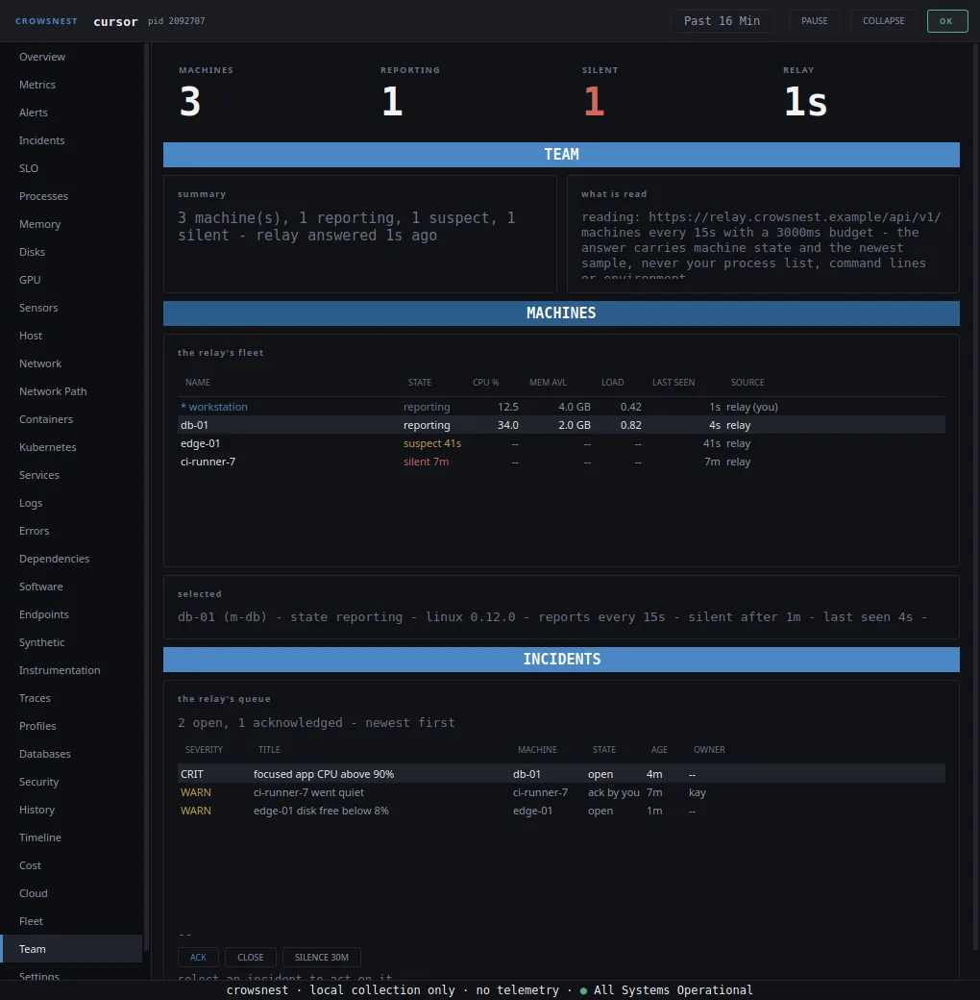
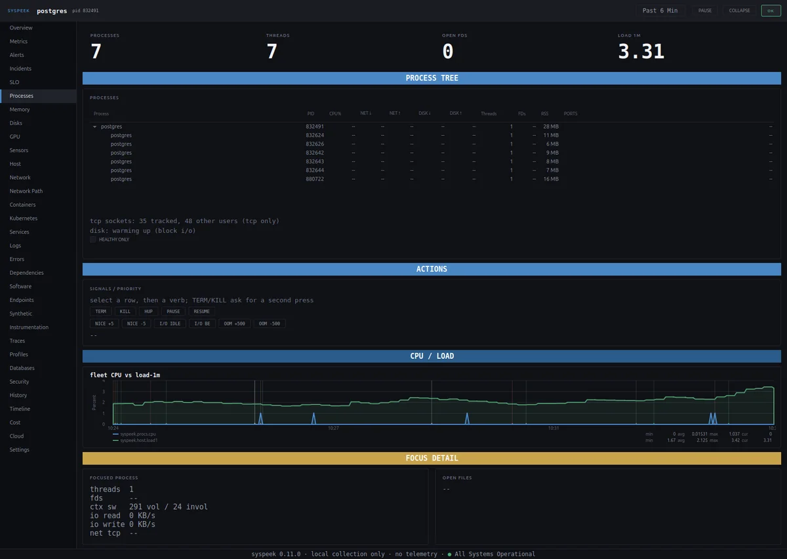
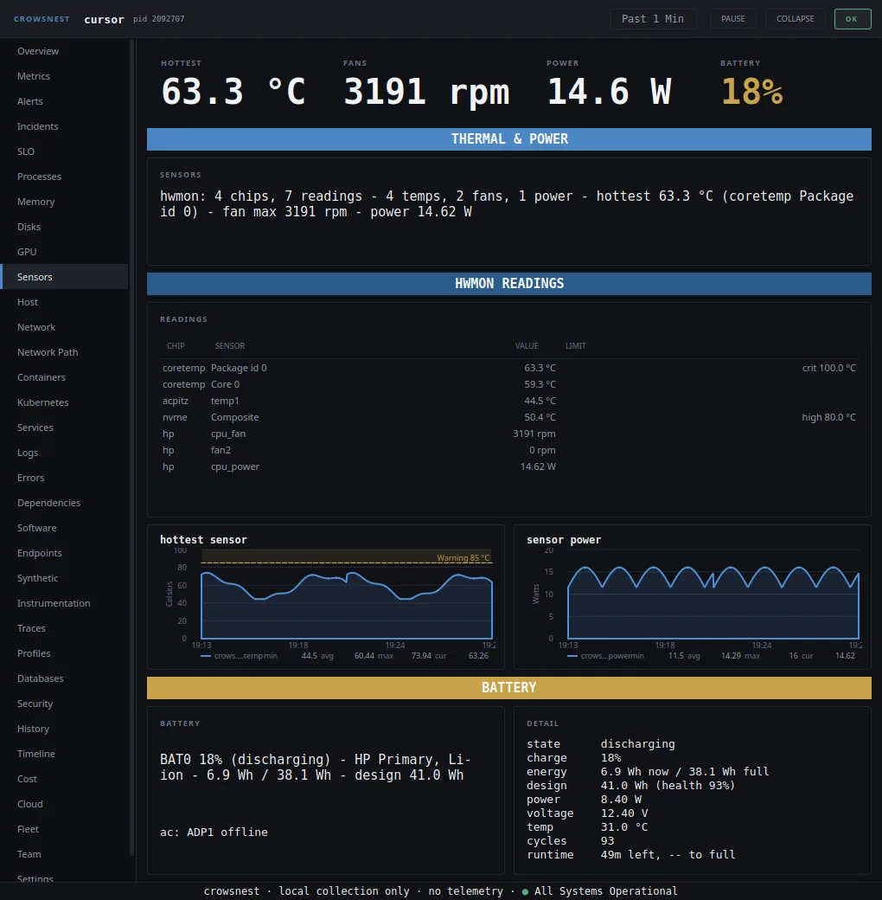
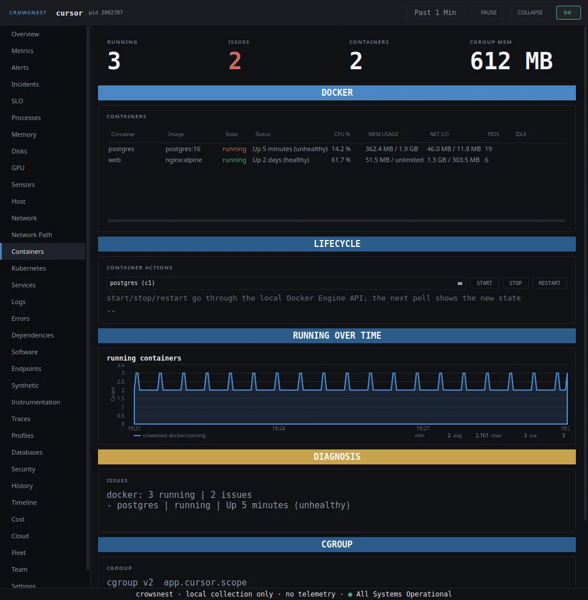
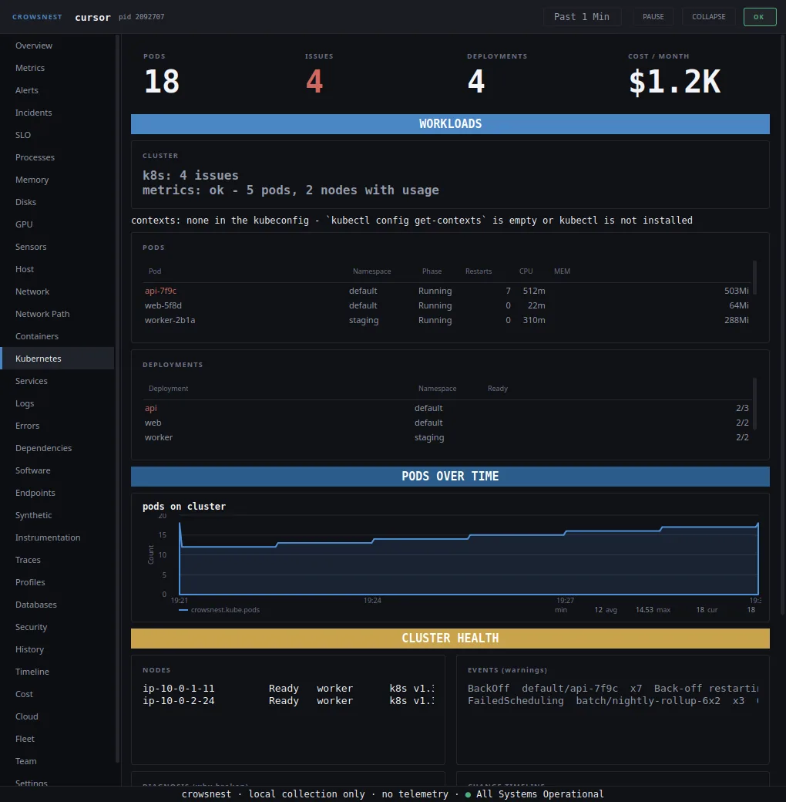
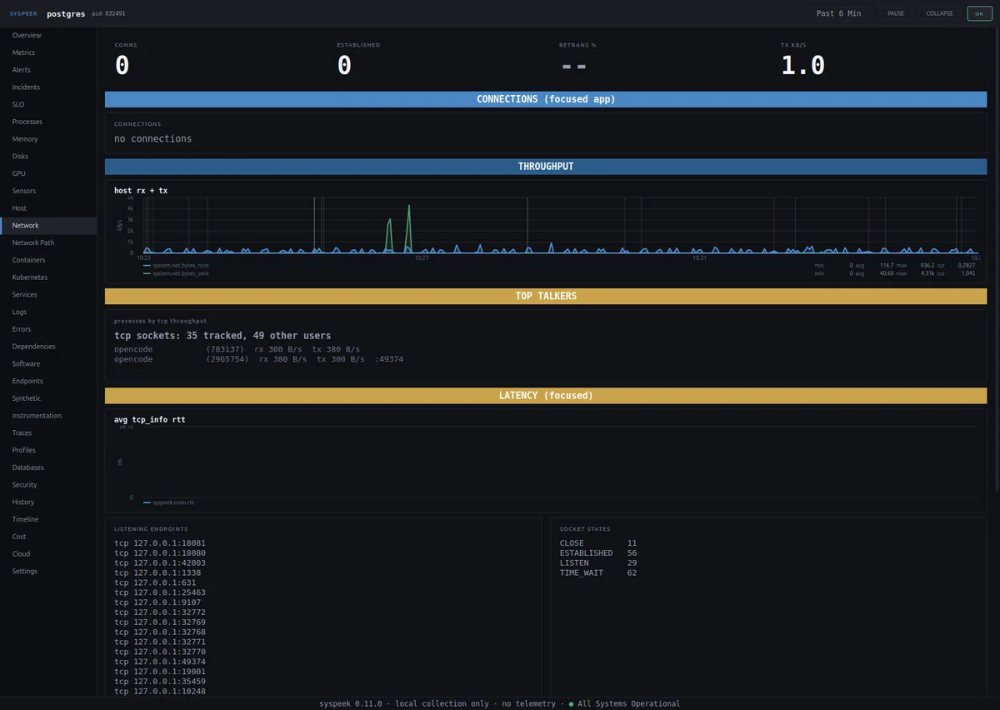
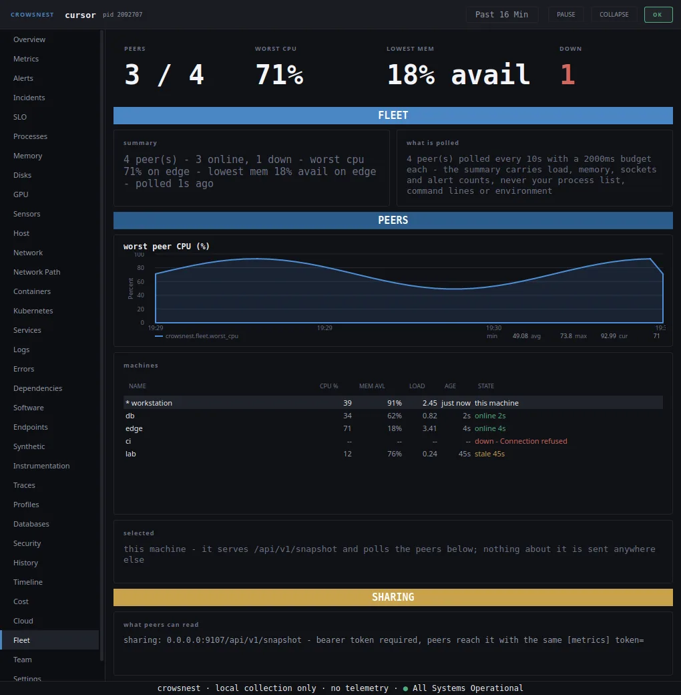
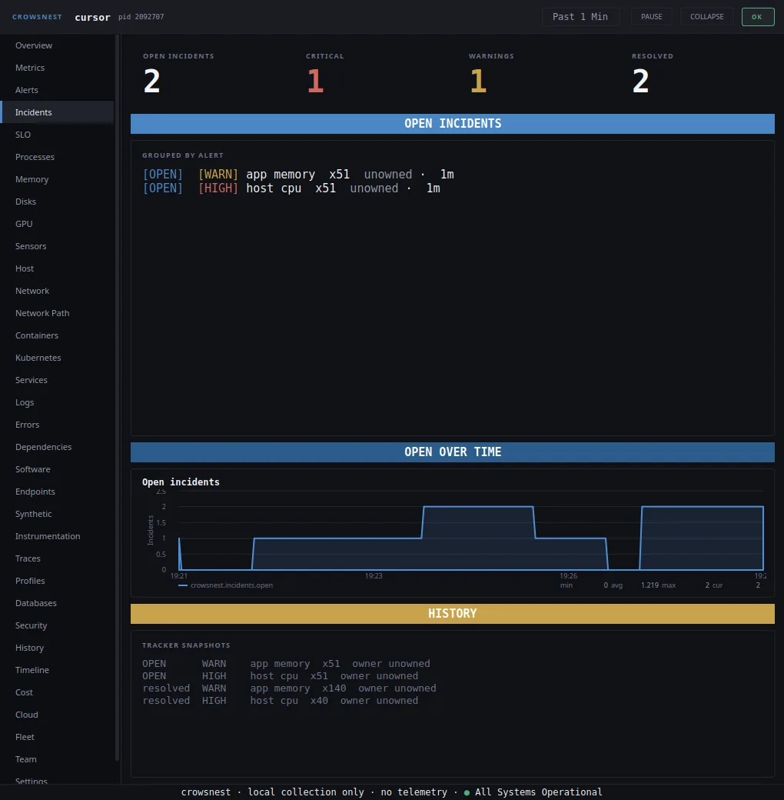
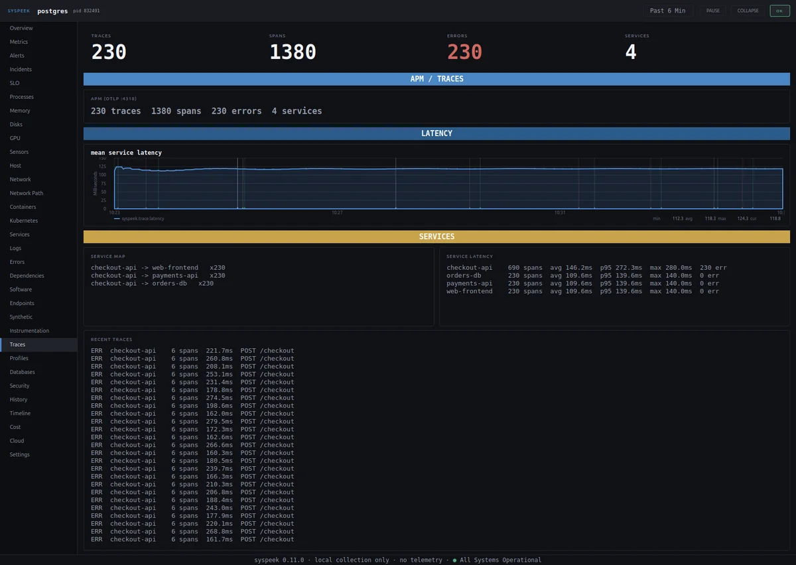
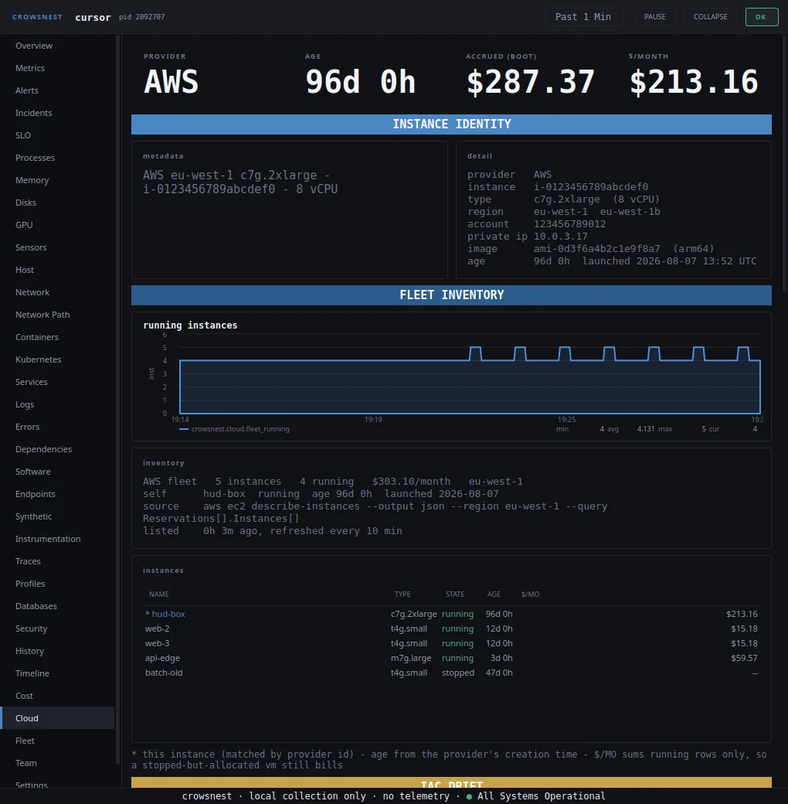
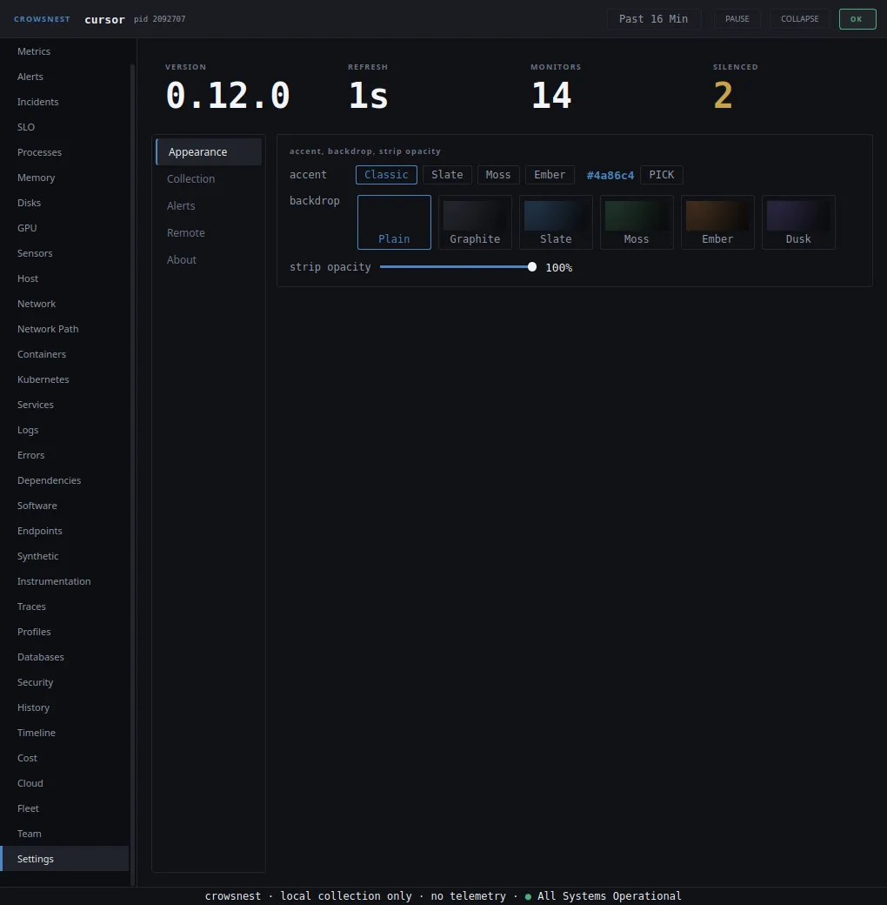
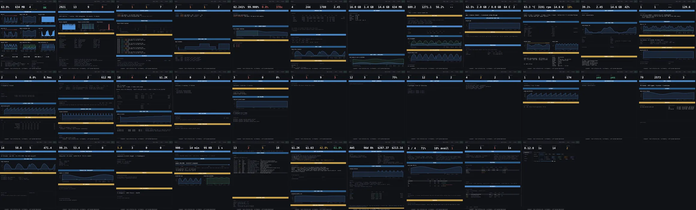
These are live captures of the Crowsnest console on one machine — not mock-ups and not a designer's render. The OTLP traces and DogStatsD metrics are real receiver traffic from small local test clients pointed at the HUD, and the cluster panels are a real single-node Kubernetes cluster with metrics-server. There is no cloud account behind this laptop, so the Cloud panel is a live capture against a local AWS emulator: the identity comes from [cloud] identity= (no instance metadata service exists there, and the card says so), and the instances, the rates and the Terraform diff are the emulator's real API responses decoded by the shipping code.
Get started
$ curl -fsSL https://raw.githubusercontent.com/codeafridi/Crowsnest/main/install.sh | sh
Installs for your user only and puts crowsnest on PATH. Nothing is started; run crowsnest to launch it, or re-run the installer with --autostart to also start it at login. Runs on Ubuntu, Debian, Fedora, Arch, openSUSE, Alpine and other 64 bit distros with glibc 2.34 or newer. No curl? The installer falls back to wget, busybox, or your package manager.
Prefer a package file? Download the .deb or the AppImage from Releases. The AppImage updates itself over zsync.
$ curl -fsSL https://raw.githubusercontent.com/codeafridi/Crowsnest/main/install.sh | sh
Downloads the latest DMG, copies the app into Applications and adds the crowsnest command. Nothing is started; re-run with --autostart for login autostart. Needs macOS 12 Monterey or newer. No permissions asked, and the installer clears Gatekeeper for you.
Prefer a package file? Download the DMG from Releases. TCP health is gated on macOS: the kernel will not hand those counters to an unprivileged reader, and the panel says so.
PS> irm https://raw.githubusercontent.com/codeafridi/Crowsnest/main/cpp/packaging/windows/install.ps1 | iex
Open PowerShell, paste the line, done. Installs into your user folder and puts crowsnest on PATH. Nothing is started; add -Autostart if you want start at login. Needs Windows 10 or newer. No Git Bash required.
Prefer a setup wizard? Download the MSI from Releases. SmartScreen may ask once, choose Run anyway.
After install: crowsnest to run it, crowsnest status to check it, crowsnest stop to quit it, crowsnest update to upgrade, and crowsnest serve to run the headless collector on a display-less fleet member.
FAQ
Yes. The desktop app is MIT with no account, no telemetry, no licence check and no feature gate. Every one of the 34 views ships in the free build. Local telemetry is never metered, and there is nothing to buy to use it.
Shared state that outlives a closed laptop: a relay that holds the fleet view, the incident queue, the on-call rota and the alert delivery while machines sleep or reboot. $9 a month or $90 a year, 14-day trial, no card. The desktop app itself is never gated — turning [remote] on is the entire upgrade. Pricing and limits.
The day a relay you run begins serving your workspace — not when you sign up. It runs 14 days, needs no card, and carries the full Team limits.
Cancellation keeps the plan to the end of the period, then data is kept 30 days before a counted delete with a receipt. A lapsed payment gives 7 days of grace: read-only by day 7, cancelled by the pass on day 8. Restore inside the window and nothing is lost.
Linux, macOS and Windows from the same codebase. Collection depth differs by what each OS will hand an unprivileged process, and the console names every gap instead of showing a blank: macOS redacts TCP counters without root, Windows has no load average, cgroups and PSI pressure are Linux surfaces, per-process socket rates need Linux. What works on your OS is listed in Settings, per surface.
By default, nothing. The outbound calls are all opt-in and all yours: the cloud metadata read for instance identity, your own webhook, your own Prometheus scraper, and [remote] reporting if you link a Team relay. Even then the payload never carries process lists, command lines, environment, paths or logs — the schema refuses them and the field list documents every byte.
Because the operating system will not give that surface to an unprivileged process, and a blank panel would read as broken. The sentence names the cause, what still works, and the switch that turns the surface on where one exists — for example sudo crowsnest on macOS for TCP counters.
crowsnest update stops the running HUD, fetches the latest release bundle and swaps it in. The AppImage updates itself over zsync, and the .deb, DMG, MSI and portable zip are on the Releases page if you prefer to install by hand.